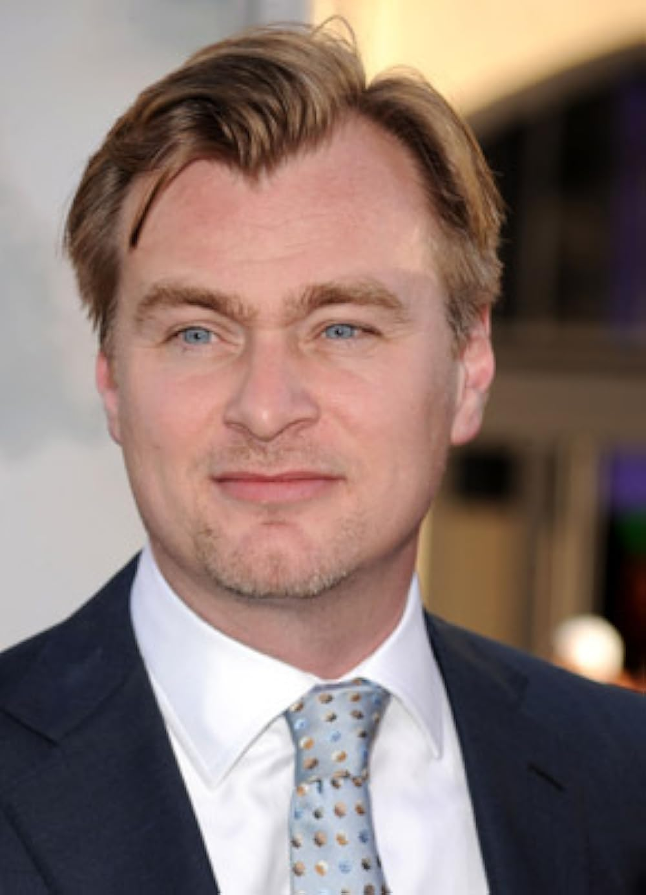

BIOGRAPHY
Overview
Christopher Nolan is a British-American filmmaker known for his complex, blockbuster films. He has earned over $6 billion worldwide and has won multiple awards, including two Academy Awards. Nolan was appointed as a Commander of the Order of the British Empire in 2019 and received a knighthood in 2024 for his contributions to the film industry. He became interested in filmmaking at a young age and gained recognition with films like Memento and The Dark Knight trilogy. His work often explores deep themes such as epistemology, existentialism, and the nature of memory and identity. Nolan's movies are known for their unique storytelling, practical effects, and experimental soundscapes. He often collaborates with his brother Jonathan and his wife Emma Thomas, running the production company Syncopy Inc. His latest film, Oppenheimer, won him multiple Academy Awards.
Early life
Christopher Nolan, born in London in 1970, comes from a family with a mix of British and American heritage. He was raised Catholic with his two brothers and spent summers in the US. Inspired by Ridley Scott and films like 2001: A Space Odyssey and Star Wars, Nolan started making films at a young age. He attended Barrow Hills and later studied English literature at UCL, choosing the school for its filmmaking facilities. Nolan co-directed his first film, Tarantella, in his teenage years. He later became president of the Union's Film Society and screened films to fund his own projects. Despite not studying film formally, Nolan's unconventional approach to education gave him a unique perspective in his filmmaking career. His passion for filmmaking started at a young age and he continued to hone his skills over the years, leading to his success as a renowned filmmaker today.
Education
Nolan was educated at Haileybury and Imperial Service College, an independent school in Hertford Heath, Hertfordshire, and later studied English literature at University College London (UCL). Opting out of a traditional film education, he pursued "a degree in something unrelated", which his father suggested "gives a different take on things". He chose UCL specifically for its filmmaking facilities, which comprised a Steenbeck editing suite and 16 mm film cameras. Nolan was president of the Union's Film Society, and with Emma Thomas (his girlfriend and future wife) he screened feature films in 35mm during the school year and used the money earned to produce 16 mm films over the summers.
Career
1993-2003: Early career and breakthrough
Nolan embarked on his filmmaking journey in the 1990s, initially directing shorts like "Larceny" and "Doodlebug." Despite facing challenges in securing funding and navigating the British film industry's tight-knit circles, he persisted in his craft. His debut feature, "Following," emerged from this period, portraying a young writer drawn into a criminal underworld. Shot on a shoestring budget, the film's success at festivals and with critics marked Nolan as a major talent to watch.
The breakthrough came with "Memento," a groundbreaking film that captivated audiences with its reverse narrative structure and exploration of memory. Adapted from a short story by Nolan's brother Jonathan, the film garnered widespread acclaim, earning nominations for prestigious awards and solidifying Nolan's reputation as an auteur. Its success not only propelled Nolan into the spotlight but also opened doors for him in Hollywood.
Steven Soderbergh's recommendation led Nolan to direct "Insomnia," a departure from his usual style but nevertheless a critical success. Starring Al Pacino and Robin Williams, the film delved into themes of morality and guilt against the backdrop of a murder investigation in Alaska. Although different from his previous work, "Insomnia" showcased Nolan's ability to craft compelling narratives and atmospheric storytelling, further cementing his status as a versatile filmmaker.
"Following", "Insomnia," and "Imsonia" established Nolan's image as an auteur. After the lattermost, he wrote a screenplay for a Howard Hughes biopic and an adaptation of Ruth Rendell's novel, "The Keys to the Street." However, these endeavors ultimately fell by the wayside. Instead, Nolan turned his attention to revitalizing the Batman franchise with "Batman Begins." His decision to reimagine the iconic superhero paid off, launching a successful trilogy and solidifying Nolan's position as one of Hollywood's most sought-after directors.
Despite occasional setbacks and missed opportunities, Nolan's career trajectory remained upward, fueled by his unwavering dedication to his craft and his ability to tackle diverse genres with aplomb. His journey from humble beginnings in the British film scene to becoming a powerhouse in Hollywood serves as a testament to his talent, resilience, and artistic vision.
2003-2013: Widespread recognition
In the early 2003, Christopher Nolan approached Warner Bros. with a bold vision for revitalizing the Batman franchise. His pitch centered on grounding the iconic character in a more realistic world, eschewing the fantastical elements often associated with comic-book adaptations. This approach intrigued the studio, leading to the development of "Batman Begins" (2005), Nolan's biggest project up to that point. Starring Christian Bale as Bruce Wayne/Batman, alongside a stellar ensemble cast including Michael Caine, Gary Oldman, Morgan Freeman, and Liam Neeson, the film was a critical and commercial triumph. It not only revived interest in the Batman franchise but also catapulted Nolan into the upper echelons of Hollywood's elite filmmakers.
Following the success of "Batman Begins," Nolan delved into a different realm with "The Prestige" (2006), a gripping tale of rivalry between two 19th-century magicians. Collaborating with his brother Jonathan, Nolan crafted a screenplay that explored themes of obsession, sacrifice, and deception. Starring Hugh Jackman and Christian Bale in the lead roles, the film was met with widespread acclaim, earning two Academy Award nominations and solidifying Nolan's reputation for delivering compelling narratives with psychological depth.
Nolan's return to the Batman universe with "The Dark Knight" (2008) elevated the superhero genre to new heights. Drawing inspiration from classic film noir and tackling complex themes of morality and chaos, the film resonated with audiences and critics alike. Led by Heath Ledger's iconic portrayal of the Joker, the film became a cultural phenomenon, hailed as one of the greatest superhero films ever made. Its impact transcended the genre, influencing subsequent films and reshaping audience expectations of what a superhero movie could be.
Amidst his Batman triumphs, Nolan continued to push creative boundaries with "Inception" (2010), a mind-bending exploration of dreams within dreams. Starring Leonardo DiCaprio and featuring a stellar ensemble cast, the film captivated audiences with its intricate plot, stunning visuals, and philosophical underpinnings. "Inception" became a box office sensation and garnered widespread critical acclaim, cementing Nolan's status as a master filmmaker capable of seamlessly blending high-concept ideas with blockbuster entertainment.
Closing out his Batman trilogy with "The Dark Knight Rises" (2012), Nolan delivered a grand finale that garnered praise for its ambition and spectacle. While the film faced criticism for its sprawling narrative and pacing, it nevertheless resonated with audiences worldwide, reaffirming the enduring legacy of Nolan's vision for the Caped Crusader. Beyond Batman, Nolan's influence extended to other superhero films, with his approach to storytelling and character development setting a new standard for the genre.
Nolan's impact on cinema goes beyond individual projects; his ability to marry commercial success with artistic integrity has reshaped Hollywood's approach to blockbuster filmmaking. Whether exploring the depths of the human psyche or reimagining iconic characters, Nolan's body of work stands as a testament to his mastery of the cinematic medium and his enduring legacy as one of the most influential filmmakers of his generation.
2014-2019: Interstellar, Dunkirk and other activities
In 2014, Nolan directed, wrote, and produced "Interstellar," a science-fiction epic based on the theoretical physics concepts of Kip Thorne. Initially scripted by Jonathan Nolan and intended for Steven Spielberg's direction, the film explores humanity's quest for survival as a group of astronauts traverses a wormhole in search of a new habitable planet. "Interstellar" received widespread acclaim for its stunning visuals, ambitious themes, and scientific accuracy, grossing over $773 million worldwide. Nolan's admiration for scientific objectivity was evident in his discussions surrounding the film, highlighting its relevance to broader societal values.
In addition to his directorial efforts, Nolan embarked on ventures promoting film preservation and the works of lesser-known filmmakers. His production company, Syncopy, collaborated with Zeitgeist Films to release Blu-ray editions of Zeitgeist's catalog. Nolan also directed the documentary short "Quay" in 2015, which accompanied the Blu-ray release of animation films by the Brothers Quay. This initiative aimed to introduce a wider audience to the Quays' distinctive style and garnered praise for Nolan's contribution to cinema.
Furthermore, Nolan championed the preservation of analog film, organizing events such as "Reframing the Future of Film" in collaboration with visual artist Tacita Dean. These gatherings brought together industry representatives to discuss the importance of preserving traditional film formats. Nolan's involvement extended to joining the board of directors of The Film Foundation and serving on the National Film Preservation Board, showcasing his commitment to safeguarding cinematic heritage.
Returning to directing in 2017, Nolan helmed "Dunkirk," a World War II film depicting the harrowing evacuation of Allied soldiers from Dunkirk, France. Drawing inspiration from historical events, Nolan crafted a narrative that prioritized sensory immersion and minimal dialogue. "Dunkirk" received critical acclaim for its innovative storytelling and earned over $526 million worldwide, solidifying Nolan's reputation as a master filmmaker. The film's success culminated in Nolan's first Oscar nomination for Best Director, marking a milestone in his illustrious career.
2020-present: Tenet and Oppenheimer
In "Tenet," Nolan explores time manipulation and espionage in a globe-trotting adventure. Despite facing multiple delays due to the COVID-19 pandemic, the film marked a significant milestone as one of the first major Hollywood releases post-shutdown. While praised for its ambition and technical prowess, "Tenet" received mixed reviews, with some critics finding its storyline convoluted. Nevertheless, it garnered accolades for its visual effects and production design, winning the Academy Award for Best Visual Effects.
Following "Tenet," Nolan shifted gears with "Oppenheimer," a biopic centered on J. Robert Oppenheimer's pivotal role in developing the atomic bomb. Starring Cillian Murphy, the film marked Nolan's return to an R-rated narrative and his departure from Warner Bros. for financing and distribution. Negotiating a lucrative deal with Universal Pictures, Nolan secured substantial creative control and financial incentives, including a sizable production budget and a lengthy theatrical window. "Oppenheimer" received widespread critical acclaim, hailed as a masterpiece by some reviewers. It combined gripping action with intellectual depth, earning over $960 million globally and winning Nolan the Academy Awards for Best Director and Best Picture.
Christopher Edward Nolan
- Born: 30 July 1970, London, England
- Nationality: British, American
- Alma Mater: University College London
- Occupations: Film director, producer, screenwriter
- Title: Co-founder of Syncopy Inc.
- Board member of: The Film Foundation
- Spouse: Emma Thomas (m. 1997)
- Children: 4
- Relatives: Jonathan Nolan (brother), John Nolan (uncle)